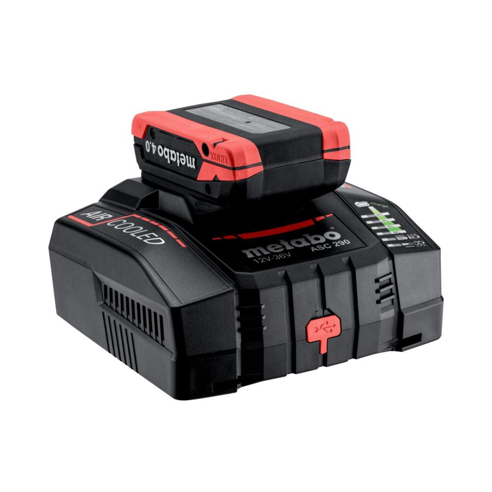
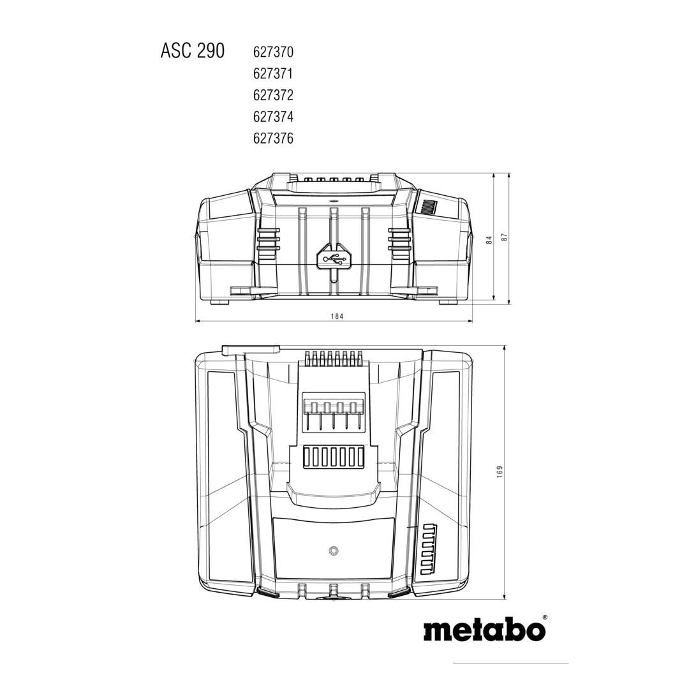
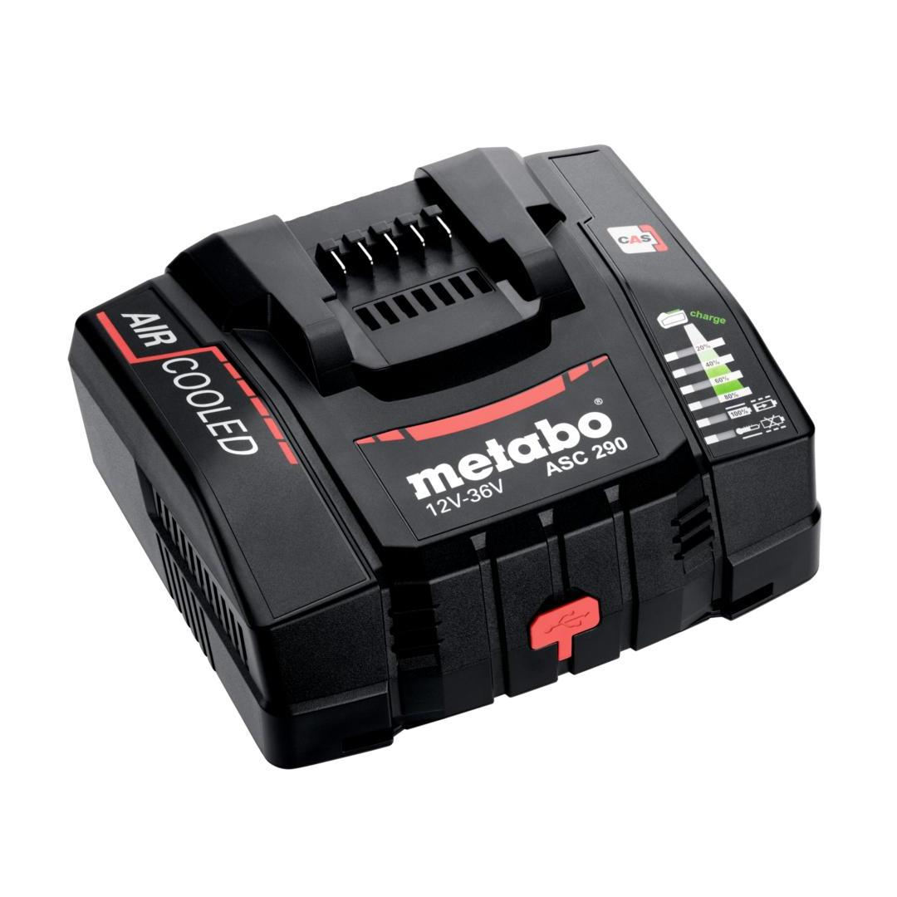

Metabo | Quick charger ASC 290, 12-36 V, EU
627370000



Product Description
- Charging in record time: the quick charger with the shortest charging times for all slide-on battery packs of all Volt classes (12 - 36V)
- The battery packs are charged up to 8x faster than with an entry level charger
- Clear display of the charging progress
- Extremely efficient charging of external devices via a USB-C cable (20 watt)
- Standby consumption about 85 % less than with most other chargers
- Worldwide use: Mains cable with plug connector, can be replaced with cable with different plug types
- 3-year warranty on all Metabo battery packs and chargers irrespective of the number of charging cycles
- Many brands, one battery pack system: charger for charging all battery packs of the CAS brands: www.cordless-alliance-system.com
Product Highlights
CAS, the multi-brand battery systemCAS, the multi-brand battery system
100% compatibility of machine, battery packs and chargers of one volt class – from Metabo and other brands. Discover now at www.cordless-alliance-system.com